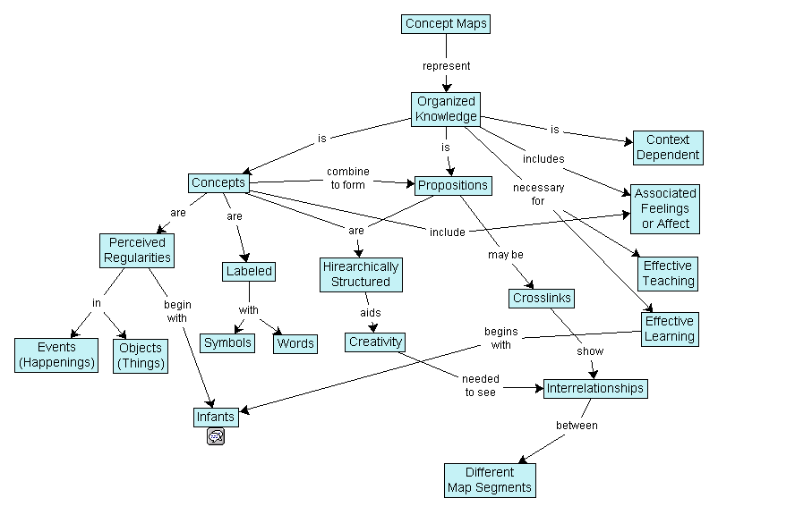

Chapter 3 Week one
Having successfully completed the research design course (BUSINESS 710), you already know a lot about doing research, and so, as we set the scene this week re qualitative research methods, many of issues and ideas raised this week will be familiar to you.
But we will be going beyond ‘just’ reading about qualitative research (QR) and start practising with some the tools and techniques of QR.
First class
Overview
In this first session, we hit the ground running and find out about you (as a academic) and your research interests (in terms of the academic conversation in which you wish to participate).
Thinking about that participation, an important change that you may have begun to notice is that staff increasingly treat you as junior (academic) colleagues, rather than simply as students (Breuer & Schreier, 2007); well, I certainly do. This has many implications from expectations around your self-regulation (Schunk, 2005) through to how you present yourself as a researcher.
Qualitative research does not take place in a vacuum. It is shaped by many factors (e.g., Huff, 2009, p. 86). Consequently, it makes sense for you to have an understanding of how those factors can affect your decisions vis-à-vis any qualitative research you might undertake. So, the starting point of this course is to surface your understanding of the academic conversation in which you wish to participate (see the discussion on assumptions in Chapter 2).
Class plan
Welcome to BUSINESS 705
As academics, what would be useful to know about one another?"
What do you want to know about the course?
How are qualitative and quantitative research different?
What role will qualitative research play in your academic life?
What does ethics in qualitative research look like?
Looking ahead to your learning journals, are you clear what you need to do (as opposed to being clear as to what you will do — ends and means).
Prep and tasks
Throughout this chapter—and also for subsequent chapters and weeks—you should think of the tasks you need to complete as ‘deliverables’; you should bring the product of you work to class in a form that you can use and share with others; i.e., for each deliverable, a single A4 page will usually suffice (it may comprise notes, diagrams, concept maps, mind maps, etc; whatever works for you and is intelligible to your colleagues).
I have highlighted concept maps as they are a powerful way to deepen your understanding of the topics at hand. As with learning journals, concept maps foster reflexivity (Hibbert et al., 2010), an important characteristic of those who aspire to be qualitative researchers.
Get to grips with concept mapping? — 90 minutes
- A concept map is a diagram that shows ‘ideas’ and th relationship between those ideas. An example of a concept map is shown in Figure 3.1.
Figure 3.1: An example concept map — Source: Wikipedia
Novak is often cited as the orginator of concept maps (for example, Novak & Cañas, 2006). Read his paper on concept maps.
Now produce a concept map show the uses of concept maps together with the pros and cons of concept mapping.
Review “Choosing an academic home” (Huff, 2009) — 30 minutes;
{kind=link}
Describe the academic conversation to which you wish to make a contribution. Do this by means of a concept map — 90 minutes.
Given the characteristics of your choose academic conversation, discuss the extent to which there are well understood patterns of research; i.e., is it the case that you are “in the midst of a conversation where many choices have been previously debated and an overarching agenda has been established” (Huff, 2009, p. 87). What are the implications of those patterns for the choice of methods in your conversation? — 60 minutes.
- Read “Part I” and “Part 2” of Myers (Qualitative research in business & management, 2013, pp. 3–56) — 120 minutes.
Summarise the main ‘big ideas’ that underpin Chapter 2 of the textbook. What parallels, if any, are there with other books and articles you have read? — 20 minutes.
Compare and contrast the role of philosophic assumptions as presented by Myers (Qualitative research in business & management, 2013) and Huff (2009) — 40 minutes.
The University of Auckland has a processes and policies around conducting research. One of the most important documents is entitled “Guiding principles for conducting research with human participants.” A copy of these guidelines can be found on the University’s website at: https://www.auckland.ac.nz/en/about/research/re-ethics/re-uahpec.html. Read the “Guiding Principles for conducting research with human participants” (“Guiding principles for conducting research with human participants,” 2013) — 40 minutes.
Second class
Overview
In this class we move from talking about qualitative research into actually practising with some of the tools and techniques; and in particular doing some interviewing (and hopefully, a lot of doing).
Looking at the big-picture, you need to work out how interviewing fits (or does not fit) with your epistemic/ontological position. And, if it does fit, in what way does it fit. At a gross level, how you go about doing an interview—say, the types of questions–will change depending on how critical/interpretivist/positivist is your stance.
Class plan
What questions and comments do you have arising from the first class?
Where do you place yourself and the research conversation that you are interested in? Positivist, interpretivist, critical, something else?
In small groups, who has the best interview guidelines for the structured interview?
How easy is it to do a structured interview?
How easy is it to do a semi-structured interview?
How does note-taking versus recording impact the interview process?
Prep and tasks
Read chapter 9 of Huff (2009) — 20 minutes.
- Identify the likely types of goals when using interviews, for positivist, interpretivist, and critical research — 40 minutes.
Read the start of “Part IV” of Myers (Qualitative research in business & management, 2013, pp. 117–135) — 60 minutes.
Develop a script (Qualitative research in business & management, 2013, p. 129) (including an interview guide) for a structured interview on the topic of “The difference between interpretivist, positivist, and critical forms of research” — 30 minutes.
Develop a script (including an interview guide) for a semi-structured interview on the topic of “The most useful article (not book) you ever read about research methods” — 30 minutes.
- Explore the ‘little blue books’ at SAGE research methods site
http://methods.sagepub.com.ezproxy.auckland.ac.nz/.
- Select one book that focuses on interviewing; spend an hour skim reading, and then summarise the book — 90 minutes.
Use the SAGE research methods site again, and find “The SAGE Handbook of interview research: The complexity of the craft” and read Chapter 15 (Wang & Yan, 2017) — 60 minutes.
- Identify that chapter’s main message — 10 minutes.
Having done tasks 4–6, do you need to revise your interview scripts (yes/no)? — 10 minutes.
Post class reflection
With the second class of the week behind you, it is time for you to reflect on what you have learnt and write-up your learning journal (Section 1.3 ‐ 90 minutes). You can then do your review of your allocated peers’ learning (Section 1.3 ‐ 60 minutes).
Given the scheduling, you might choose to do this at the start of the next week.